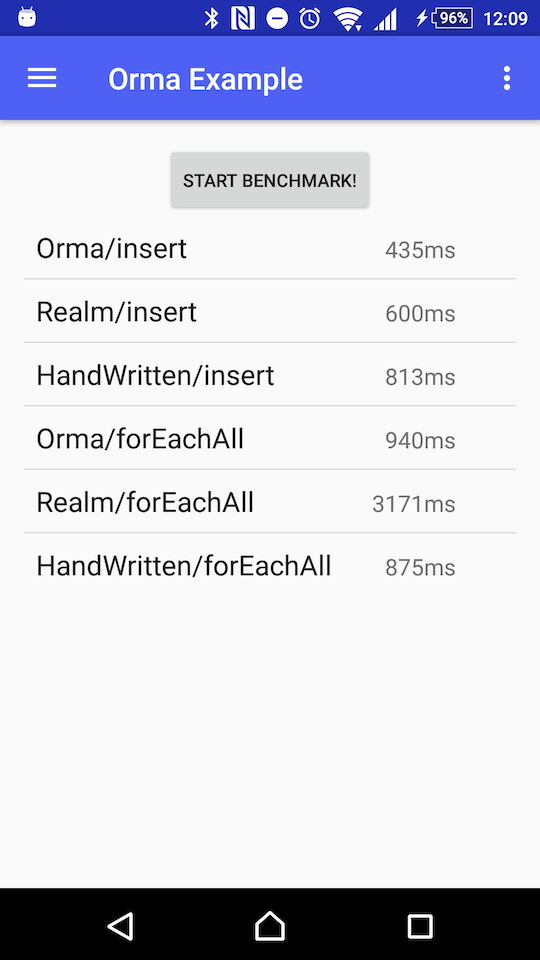

Android Orma 


Orma is an ORM (Object-Relation Mapper) for Android SQLiteDatabase, generating helper classes at compile time with annotation processing, inspired in ActiveAndroid, GreenDAO, and Realm.
The interface of Orma is very simple and easy to use, as the author respects the Larry Wall's wisdom:
Easy things should be easy, and hard things should be possible -- Larry Wall
Table of Contents
- Table of Contents
- Motivation
- Requirements
- Getting Started
- Synopsis
- The Components
- Details of Database Handles
- Details of Models
- Associations
- Type Adapters
- Raw Queries
- Migration
- DataSet Changed Events
- Cooperation with Serialization Libraries
- Example
- Benchmark
- Method Count
- FAQ
- Support
- Licenses in Runtime Dependencies
- Contribution
- Release Engineering for Maintainers
- See Also
- Authors and Contributors
- License
Motivation
There are already a lot of ORMs. Why I have to add another wheel?
The answer is that I need ORM that have all the following features:
- Fast as hand-written code
- POJO models
- Model classes should have no restriction
- Might implement
Parcelableand/or extend any classes - They should be passed to another thread
- A database handle must be an object instance
- Not a singleton class
- Not a static-method based class
- Easy migration
- Some
ALTER TABLE, e.g.add columnanddrop column, should be detectd and processed - There is a wheel in Perl: SQL::Translator::Diff
- Some
- Code completion friendly
-
db.selectFromModel()is better thannew Select(Model.class)
-
- Custom raw queries are sometimes inevitable
GROUP BY ... HAVING ...SELECT max(value), min(value), avg(value), count(value) FROM ...
And now they are what Orma has.
Requirements
- JDK 8 (1.8.0_66 or later) to build
- Android API level 15 to use
Getting Started
Declare dependencies to use Orma and its annotation processor.
dependencies {
annotationProcessor 'com.github.gfx.android.orma:orma-processor:4.0.0'
compile 'com.github.gfx.android.orma:orma:4.0.0'
}
NOTE: if you use Android Gradle Plugin before 2.2.0, you must use android-apt plugin instead of annotationProcessor configuration.
Synopsis
First, define model classes annotated with @Table, @Column, and @PrimaryKey and run the Build APK command to generate helper classes.
package com.github.gfx.android.orma.example;
import com.github.gfx.android.orma.annotation.Column;
import com.github.gfx.android.orma.annotation.PrimaryKey;
import com.github.gfx.android.orma.annotation.Table;
import android.support.annotation.Nullable;
@Table
public class Todo {
@PrimaryKey
public long id;
@Column(indexed = true)
public String title;
@Column
@Nullable // allows NULL (default: NOT NULL)
public String content;
@Column
public long createdTimeMillis;
}Second, instantiate a database handle OrmaDatabase, which is generated by orma-processor.
Here is an example to configure OrmaDatabase:
// See OrmaDatabaseBuilderBase for other options.
OrmaDatabase orma = OrmaDatabase.builder(context)
.build();Then, you can create, read, update and delete models via OrmaDatabase:
Todo todo = ...;
// create
orma.insertIntoTodo(todo);
// prepared statements with transaction
orma.transactionSync( -> { // or transactionAsync() to execute tasks in background
Inserter<Todo> inserter = orma.prepareInsertIntoTodo();
inserter.execute(todo);
});
// read
orma.selectFromTodo()
.titleEq("foo") // equivalent to `where("title = ?", "foo")`
.executeAsObservable() // first-class RxJava interface
.subscribe(...);
// update
orma.updateTodo()
.titleEq("foo")
.content("a new content") // to setup what are updated
.execute();
// delete
orma.deleteFromTodo()
.titleEq("foo")
.execute();Note that Orma aborts if writing occurs on main thread in debug build.
Use background threads for writing or RxJava interfaces with Schedulers.io().
Otherwise you can disable this behavior:
OrmaDatabase orma = OrmaDatabase.builder(context)
.writeOnMainThread(BuildConfig.DEBUG ? AccessThreadConstraint.WARNING : AccessThreadConstraint.NONE)
.build();The Components
Database Handles
A database handle, named OrmaDatabase by default, is generated by orma-processor, which is an entry point of all the high-level database operations.
This is typically used as a singleton instance and you don't need to manage its lifecycle. That is, you don't need to explicitly close it.
Models
A model in Orma is a Java class that is annotated with @Table, which
has at least one column, a field annotated with @Column or @PrimaryKey.
orma-processor generates helper classes for each model:
Schema, Relation, Selector, Updater, and Deleter.
Because these helper classes are generated at the compile time, you can use Orma as a type-safe ORM.
Schema Helpers
A Schema helper, e.g. Todo_Schema, has metadata for the corresponding model.
This is an internal helper class and not intended to be employed by users.
Relation Helpers
A Relation helper, e.g. Todo_Relation, is an entry point of table operations, which has conditions and orderings.
This is created by a database handle:
public static Todo_Relation relation() {
return orma.relationOfTodo();
}And is able to create Selector, Updater, Deleter, and Inserter for the model.
Todo_Relation todos = orma.relationOfTodo();
todos.selector().toList(); // Todo_Selector
todos.updater().content("foo").execute(); // Todo_Updater
todos.inserter().execute(todo); // Inserter<Todo>
todos.deleter().execute(); // Todo_DeleterThis can be a subset of a table which has ORDER BY clauses and WHERE clauses with some List-like methods:
Todo_Relation todos = orma.relationOfTodo()
.doneEq(false) // can have conditions
.orderByCreatedTimeMillis(); // can have orders
// List-like features:
int count = todos.count();
Todo todo = todos.get(0);
// Convenience utilities
int position = todos.indexOf(todo);
todos.deleteWithTransactionAsObservable()
.subscribeOn(Schedulers.io())
.observeOn(AndroidSchedulers.mainThread())
.subscribe(position -> {
notifyItemRemoved(position); // assumes Adapter#notifyItemRemoved()
})
todos.truncateWithTransactionAsObservable()
.subscribeOn(Schedulers.io())
.subscribe();
// Todo_Relation implements Iterable<Todo>
for (Todo todo : todos) {
// ...
}Selector Helpers
A Selector helper, e.g. Todo_Selector, is created by a Relation:
Todo_Selector selector = relation().selector();
// or orma.selectFromTodo();This is a query builder for SELECT ... FROM * statements.
Updater Helpers
An Updater helper, e.g. Todo_Updater, is created by a Relation:
Todo_Updater updater = relation().updater();
// or orma.updateTodo();This is a query builder for UPDATE * statements.
Deleter Helpers
A Deleter helper, e.g. Todo_Deleter, is created by a Relation:
Todo_Deleter deleter = relation().deleter();
// or orma.deleteFromTodo();This is a query builder for DELETE FROM * statements.
Query Helper Methods
There are Query Helpers which are generated to query conditions and orders in a type-safe way.
For example, titleEq() shown in the synopsis section, are generated to help make WHERE and ORDER BY clauses,
for Relation, Selecotr, Deleter, and Updater.
Most of them are generated for columns with indexed = true, and some are for @PrimaryKey columns.
List of Query Helper Methods
Here is a list of Query Helpers that are generated for all the indexed columns, where * is a column name pladeholder:
| Method | SQL |
|---|---|
*Eq(value) |
* = value |
*NotEq(value) |
* <> value |
*In(values) |
* IN (values) |
*NotIn(values) |
* NOT IN (values) |
The following are generated for @Nullable columns.
| Method | SQL |
|---|---|
*IsNull() |
* IS NULL |
*IsNotNull() |
* IS NOT NULL |
The following are generated for numeric columns
(i.e. byte, short, int, long, float, double, and their corresponding box types)
| Method | SQL |
|---|---|
*Lt(value) |
* < value |
*Le(values) |
* <= value |
*Gt(value) |
* > value |
*Ge(value) |
* >= value |
*Between(a, b) |
* BETWEEN a AND b |
And ORDER BY helpers:
| Method | SQL |
|---|---|
orderBy*Asc() |
ORDER BY * ASC |
orderBy*Desc() |
ORDER BY * DESC |
How to Control Generation of Query Helpers
This is an advanced setting for those who know what they do.
You can control which Query Helpers are generater for a column by @Column(helpers = ...) attribute:
@Column(
helpers = Column.Helpers.AUTO // default to AUTO
)Here are the definition of options defined in Column.java:
long AUTO = -1; // the default, a smart way
long NONE = 0;
long CONDITION_EQ = 0b01;
long CONDITION_NOT_EQ = CONDITION_EQ << 1;
long CONDITION_IS_NULL = CONDITION_NOT_EQ << 1;
long CONDITION_IS_NOT_NULL = CONDITION_IS_NULL << 1;
long CONDITION_IN = CONDITION_IS_NOT_NULL << 1;
long CONDITION_NOT_IN = CONDITION_IN << 1;
long CONDITION_LT = CONDITION_NOT_IN << 1;
long CONDITION_LE = CONDITION_LT << 1;
long CONDITION_GT = CONDITION_LE << 1;
long CONDITION_GE = CONDITION_GT << 1;
long CONDITION_BETWEEN = CONDITION_GE << 1;
long CONDITIONS = CONDITION_EQ | CONDITION_NOT_EQ | CONDITION_IS_NULL | CONDITION_IS_NOT_NULL
| CONDITION_IN | CONDITION_NOT_IN
| CONDITION_LT | CONDITION_LE | CONDITION_GT | CONDITION_GE | CONDITION_BETWEEN;
long ORDER_IN_ASC = CONDITION_BETWEEN << 1;
long ORDER_IN_DESC = ORDER_IN_ASC << 1;
long ORDERS = ORDER_IN_ASC | ORDER_IN_DESC;
long ALL = CONDITIONS | ORDERS;The Inserter Helpers
This is a prepared statement for INSERT INTO ... for bulk insertions.
Inserter<Todo> inserter = relation().inserter();
// or orma.insertIntoTodo()
inserter.execute(todo);
inserter.executeAll(todos);Details of Database Handles
The section describes the details of database handles.
Configuration of Database Handles
The database class is configured by the @Database annotation:
@Database(
databaseClassName = "OrmaDatabase", // default to "OrmaDatabase"
includes = { /* ... */ } // Give model classes to handle
excludes = { /* ... */ } // Give model classes not to handle
)
public class DatabaseConfiguration { }The annotated class is not used for now, but the package is used to place the OrmaDatabase class.
Database Handle Builders
OrmaDatabase.builder(Context) returns a builder isntance, which
has configure the database handle instance:
| Method | Description | Default |
|---|---|---|
name(String) |
The filename of SQLite DB | "${package}.orma.db" |
migrationEngine(MigrationEngine) |
Custom migration engine | OrmaMigration |
writeAheadLogging(boolean) |
SQLite WAL flag | true |
foreignKeys(boolean) |
SQLite FOREIGN_KEYS flag | true |
migrationStep(int, ManualStepMigration.Step) |
A migration step | none |
trace(boolean) |
Output executed queries to logcat if true | dynamic (*1) |
readOnMainThread(AccessThreadConstraint) |
Check read operation on main thread | dynamic (*2) |
writeOnMainThread(AccessThreadConstraint) |
Check write operation on main thread | dynaimc (*3) |
-
*1
BuildConfig.DEBUG ? true : false -
*2
BuildConfig.DEBUG ? WARN : NONE -
*3
BuildConfig.DEBUG ? FATAL : NONE
Details of Models
The section describes the details of model definition.
Setters and Getters
Orma can use getters and setters if columns have corresponding methods.
You can also connect getters and setters with @Getter and @Setter
respectively, which tells orma-processor to use accessors.
Each accessor name can have a column name in SQLite databases, which is inferred from its method name if omitted.
@Table
public class KeyValuePair {
static final String kKey = "Key";
@Column(kKey) // specifies the name
private String key;
@Column // omits the name
private String value;
@Getter(kKey)
public String getKey() {
return key;
}
@Setter(kKey)
public void setKey(String key) {
this.key = key;
}
// used as a getter for the "value" column
// @Getter is optional in this case
public String getValue() {
return value;
}
// used as a setter for the "value" column
// @Setter is optional in this case
public void setValue(String value) {
this.value = value;
}
}Immutable Models
Immutable models, where all the fields are declared with final, are supported
by annotating a constructor with @Setter.
@Table
public class KeyValuePair {
@Column
public final String key;
@Column
public final String value;
@Setter
KeyValuePair(String key, String value) {
this.key = key;
this.value = value;
}
}It can be declared with custom names:
@Table
public class KeyValuePair {
static final String kKey = "Key";
static final String kValue = "Value";
@Column(kKey)
public final String key;
@Column(kValue)
public final String value;
KeyValuePair(@Setter(kKey) String key, @Setter(kValue) String value) {
this.key = key;
this.value = value;
}
}Associations
Two or more Orma models can be associated with association mechanism.
There are two type of associations: has-one and has-many.
In addition, there are another two kind of association supports: indirect associations with SingleAssociation<T> and direct associations.
Has-One Associations with SingleAssociation<T>
There is SingleAssociation<T> to support has-one associations, which is
retrieved on demand, or loaded lazily.
For example, a book has a publisher:
@Table
class Publisher {
@PrimaryKey
public long id;
}
@Table
class Book {
@Column
public SingleAssociation<Publisher> publisher;
}The entity of Book#publisher is Publisher#id.
Has-Many Associations with SingleAssociation<T>
Has-many associations are not directly supported but you can define a method to get associated objects:
@Table
class Publisher {
@PrimaryKey
public long id;
public Book_Relation getBooks(OrmaDatabase orma) {
return orma.relationOfBook().publisherEq(this);
}
}
@Table
class Book {
@Column(indexed = true)
public SingleAssociation<Publisher> publisher;
}Direct Associations
There are direct associations, where an Orma model has another Orma model directly.
Given a has-one association, Book has-one Publisher:
@Table
class Publisher {
@PrimaryKey
public long id;
@Column
public String name;
}
@Table
class Book {
@PrimaryKey
public long id;
@column
public String title;
@Column
public Publisher publisher;
}The corresponding table definition is something like this:
CREATE TABLE `Publisher` (
`id` INTEGER PRIMARY KEY,
`name` TEXT NOT NULL
)
CREATE TABLE `Book` (
`id` INTEGER PRIMARY KEY,
`title` TEXT NOT NULL,
`publisher` INTEGER NOT NULL
REFERENCES `Publisher`(`id`) ON UPDATE CASCADE ON DELETE CASCADE
)In SQL, Book#publisher refers Publisher#id, indicating the two tables
should be joined in SELECT statements.
In Java, Book#publisher is a Publisher instance, which is retrieved in each
SELECT operations. There is no lazy loading in direct associations.
Limitations in Associations
- There are no methods to query associated models
These issues will be fixed in a future.
Type Adapters
Orma models are able to have embedded objects with type adapters, a.k.a. static type adapters,
by defining classes with @StaticTypeAdapter annotation.
For example, if you want to embed LatLng in your Orma model, you can define a type adapter like this:
@StaticTypeAdapter(
targetType = LatLng.class, // required
serializedType = String.class // required
)
public class LatLngAdapter {
// SerializedType serialize(TargetType source)
@NonNull
public static String serialize(@NonNull LatLng source) {
return source.latitude + "," + source.longitude
}
// TargetType deserialize(SerializedType serialized)
@NonNull
public static LatLng deserialize(@NonNull String serialized) {
String[] values = serialized.split(",");
return new LatLng(
Double.parseDouble(values[0]),
Double.parseDouble(values[1]));
}
}@StaticTypeAdapter requires targetType and serializedType options and two static methods SerializedType serialize(TargetType) and TargetType deserialize(SerializedType).
How Serialized Types Used
A @StaticTypeAdapter#serializedType is bound to an SQLite storage type.
Thus it must be one of the "Java Type" listed the table below, where each "Java Type" has a corresponding "SQLite Type":
| Java Type | SQLite Type |
|---|---|
| int | INTEGER |
| short | INTEGER |
| long | INTEGER |
| boolean | INTEGER |
| float | REAL |
| double | REAL |
| String | TEXT |
| byte[] | BLOB |
@StaticTypeAdapters for Multiple Serializers at Once
You can also define multiple type serializers to single class with @StaticTypeAdapters annotation containers:
@StaticTypeAdapters({
@StaticTypeAdapter(
targetType = MutableInt.class,
serializedType = int.class,
serializer = "serializeMutableInt",
deserializer = "deserializeMutableInt"
),
@StaticTypeAdapter(
targetType = MutableLong.class,
serializedType = long.class,
serializer = "serializeMutableLong",
deserializer = "deserializeMutableLong"
)
})
public class TypeAdapters {
public static int serializeMutableInt(@NonNull MutableInt target) {
return target.value;
}
@NonNull
public static MutableInt deserializeMutableInt(int deserialized) {
return new MutableInt(deserialized);
}
public static long serializeMutableLong(@NonNull MutableLong target) {
return target.value;
}
@NonNull
public static MutableLong deserializeMutableLong(long deserialized) {
return new MutableLong(deserialized);
}
}Built-In Type Adapters
There are built-in type adapters for typically used value objects and collections:
java.math.BigDecimaljava.math.BigIntegerjava.nio.ByteBufferjava.util.Currencyjava.util.Datejava.sql.Datejava.sql.Timejava.sql.Timestampjava.util.UUIDjava.util.List<String>java.util.ArrayList<String>java.util.Set<String>java.util.HashSet<String>android.net.Uri
Raw Queries
For low-level operations, e.g. executing a raw query, you can use
OrmaDatabase#getConnection(), which returns OrmaConnection.
For example:
Cursor cursor = db.getConnection().rawQuery("SELECT max(bookId) as max_id, min(bookId) as min_id FROM Book");
cursor.moveToFirst();
// get data from cursor
cursor.close();NOTE: Don't use rawQuery() for performance because Orma query builders are fast enough.
Migration
There is a pluggable migration mechanism via the MigrationEngine interface.
The default migration engine is SchemaDiffMigration, which handles
schema changes by making diff with old and new DDL stored in sqlite_master.
That is, you don't need migration steps for the following cases:
- Adding tables
- Adding columns
- Changing column types
- Changing column constraints (
NOT NULL,UNIQUE, and etc.)
Of course, you can define migration steps for each schema version (or BuildConfig.VERSION).
Here is an example to define migration steps:
int VERSION_2; // a past version of VERSION_CODE
OrmaDatabase orma = OrmaDatabase.builder(this)
.migrationStep(VERSION_2, new ManualStepMigration.ChangeStep() {
@Override
public void change(@NonNull ManualStepMigration.Helper helper) {
Log.(TAG, helper.upgrade ? "upgrade" : "downgrade");
helper.execSQL("DROP TABLE foo");
helper.execSQL("DROP TABLE bar");
}
})
// ... other configurations
.build();See migration/README.md for details.
DataSet Changed Events
NOTE: This is experimental in v4.0.0: its existence, signature or behavior might change without warning from one release to the next.
Relation#createQueryObservable() can create a event stream to observe data-set changed events for the relation.
This likes SQLBrite's' "Query Observable", whereas Orma's does not notify the initial event.
// NOTE: Keep the observable instance. If it's released, the observable is disposed.
// create a query observable, which is a hot observable
Observable<Author_Selector> observable = db.relationOfAuthor()
.createQueryObservable();
// subscribe the events
observable.flatMap(new Function<Author_Selector, Observable<Author>>() {
@Override
public Observable<Author> apply(Author_Selector selector) throws Exception {
Log.d(TAG, "Author has been changed!");
return selector.executeAsObservable();
}
})
.map(new Function<Author, String>() {
@Override
public String apply(Author author) throws Exception {
return author.name;
}
})
.subscribe(new Consumer<String>() {
@Override
public void accept(String name) throws Exception {
Log.d(TAG, "name: " + name);
}
});See OrmaListAdapter and OrmaRecyclerViewAdapter, which use Query Observables to
trigger #notifyDataSetChanged().
Cooperation with Serialization Libraries
Beause Orma reuqires nothing to do to models, serializers, e.g. Android Parcels or GSON, can serialize Orma models.
Example
There is an example app to demonstrate:
- Migration
- Orma with
RecyclerView/ListView - Benchmark (see below)
Benchmark
There is a simple benchmark with Realm and hand-written SQLiteDatabase code:
Here is a result performed on Android 6.0.0 / Xperia Z4 as of Orma v3.0.0 and Realm 2.0.2, processing 10 items x 100 times:

I welcome benchmark in another condition and/or another code.
Method Count
Orma runtime is very lightweight: Method Count for v4.0.0
FAQ
Can't build my project.
Check your toolchain. FYI here are my toolchain versions:
- JDK 1.8.0_66
- Android SDK Tools 25 or later
- Android SDK Platform Tools 24 or later
- Android SDK Build Tools 24 or later
- Android Gradle Plugin 2.2.0 or later
How can I enable debug logging on release build?
Call OrmaDatabase.Builder#trace(boolean) with true:
OrmaDatabase orma = OrmaDatabase.builder(context)
.trace(true)
.create();This option also enables logging in the default migration engine.
If you give a custom migration engine to the orma builder, you have to enable
trace flag to its constructor:
boolean trace = true;
SchemaDiffMigration migration = new SchemaDiffMigration(context, trace);How can see the generated Java files?
As other annotation processors do, Orma save files to $modle/build/generated/source/apt/.
You can see generated files for example models.
Does Orma work with Kotlin?
Yes, but it's experimental. Here is an example to use Orma with Kotlin:
https://github.com/gfx/OrmaWithKotlin
NOTE: Kotlin APT support, a.k.a. kapt, is really unstable. Don't ask me how to solve kapt problems.
Does Orma work with the Jack compiler?
Yes. As of Android Gradle Plugin 2.2.2, Orma should work with Jack.
dependencies {
annotationProcessor 'com.github.gfx.android.orma:orma-processor:4.0.0'
compile 'com.github.gfx.android.orma:orma:4.0.0'
}
See https://github.com/gfx/OrmaWithJack for a working example.
When the database handle is opened and closed?
Orma opens the database handle in instantiating OrmaDatabase, and you don't need to
close it.
In other word, you can define the database handle as a singleton instance in your application scope,
and forget close.
Who uses Orma?
Here is a list of open-source Androdi apps using Orma which are released to Google Play:
Here is a list of apps using Orma which are proprietary and released to Google Play:
Tell me if your projects use Orma!
Support
- Use GitHub issues for the issue tracker
- Feel free to ask for questions to the author @__gfx__
Licenses in Runtime Dependencies
- https://github.com/ReactiveX/RxJava - Apache Software License 2.0
-
bkiers/sqlite-parser - The MIT License
- The original code of SQLite.g4
Contribution
Patches are welcome!
Release Engineering for Maintainers
./gradlew bumpMajor # or bumpMinor / bumpPatch
git add -va
make publish # run tests, build artifacts, publish to jcenter, and make a tagVisual Studio Code (a.k.a. vscode) is recommended to edit README.md and CHANGELOG.md. Especially the ToC section is managed by AlanWalk/Markdown-TOC.
See Also
Authors and Contributors
FUJI Goro (gfx).
And contributors are listed here: Contributors
License
Copyright (c) 2015 FUJI Goro (gfx).
Licensed under the Apache License, Version 2.0 (the "License"); you may not use this file except in compliance with the License. You may obtain a copy of the License at
http://www.apache.org/licenses/LICENSE-2.0
Unless required by applicable law or agreed to in writing, software distributed under the License is distributed on an "AS IS" BASIS, WITHOUT WARRANTIES OR CONDITIONS OF ANY KIND, either express or implied. See the License for the specific language governing permissions and limitations under the License.